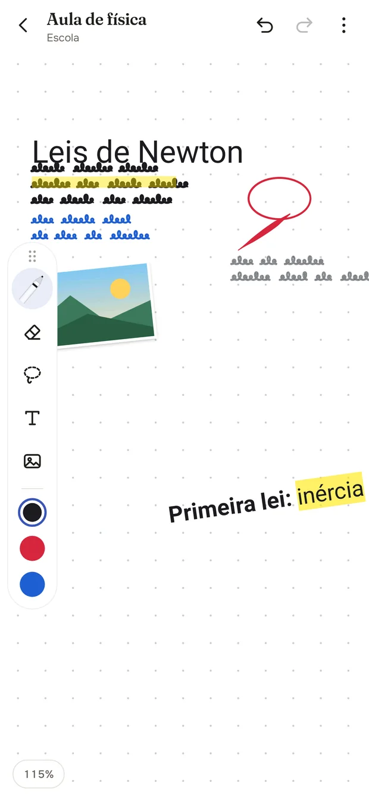
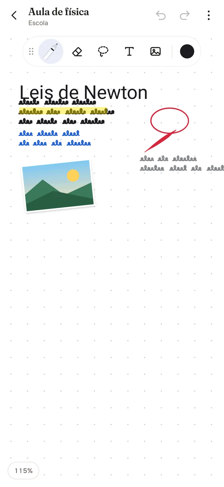
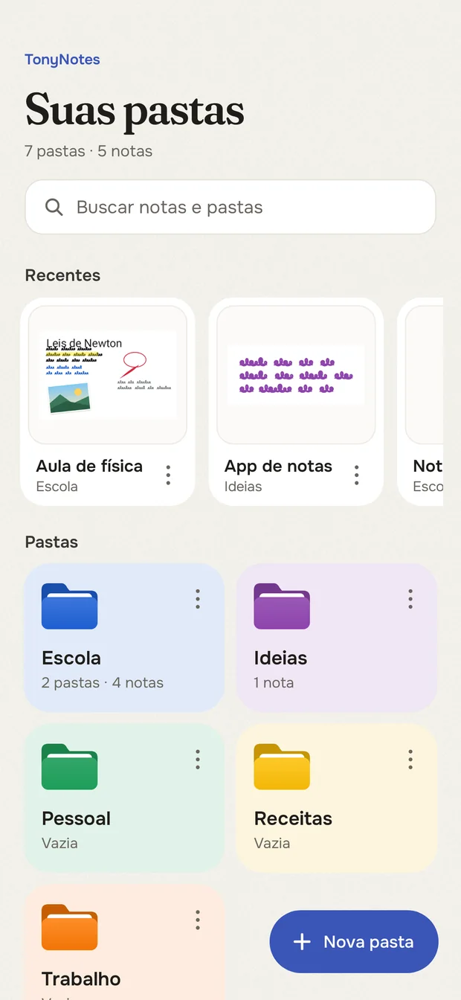
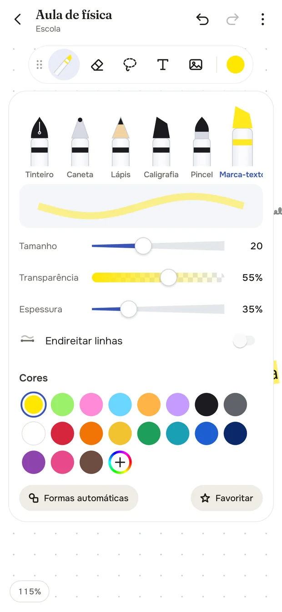
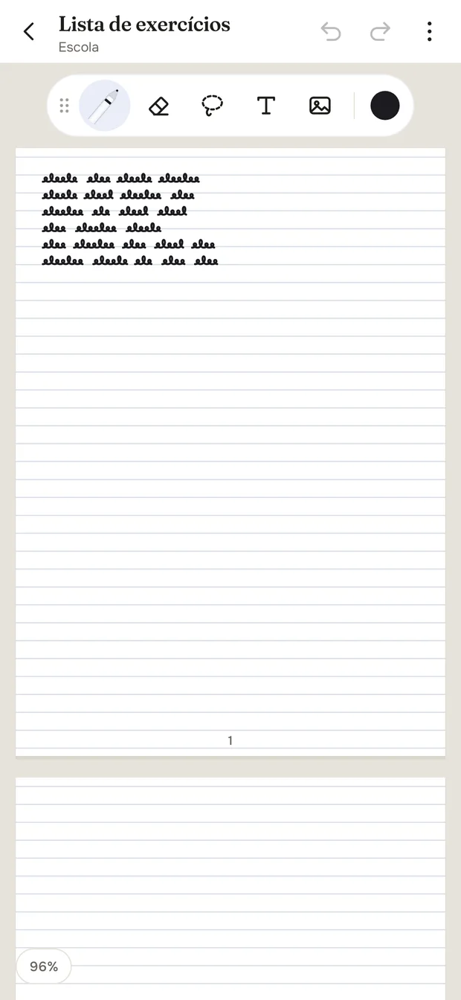
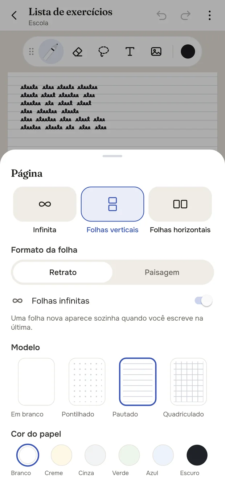
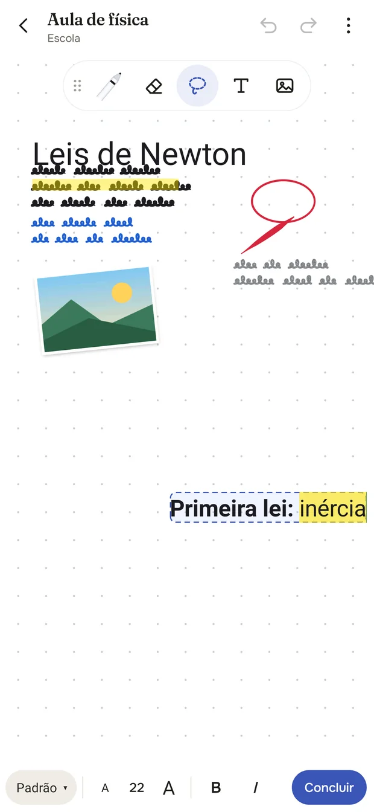
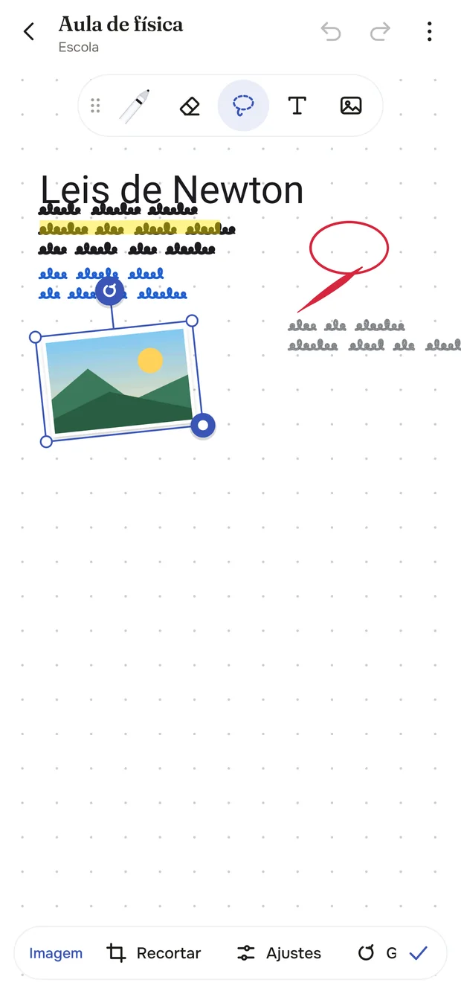
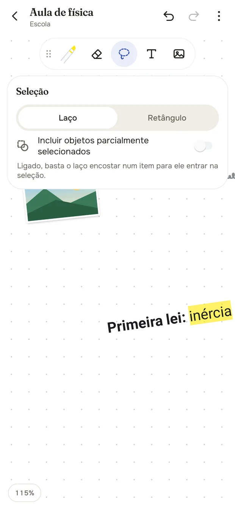

App de anotações para Android · feito para a S Pen
Escreva sem nunca chegar na borda.
O TonyNotes é uma folha que não acaba: para os lados e para baixo. Ou, se preferir, folhas de verdade, uma atrás da outra. A tinta segue a caneta sem atraso.


Os pincéis do app, aqui no navegador.
Mesma matemática do TonyNotes: a caneta-tinteiro afina com a velocidade, a caligrafia tem bico a 45°, o lápis tem grão de grafite e o marca-texto tem ponta chanfrada. Use o mouse, o dedo ou uma caneta.
Tudo o que cabe num caderno, e um pouco mais.
Pensado a partir do Samsung Notes, com o que faltava nele: a tela que não acaba e uma barra que vai para onde a sua mão está.
Tela infinita ou folhas
Escreva para os lados e para baixo sem fim, ou use folhas verticais ou horizontais, em retrato ou paisagem. Com folhas infinitas, a próxima aparece sozinha.
Seis pincéis com memória
Caneta-tinteiro, caneta, lápis, caligrafia, pincel e marca-texto. Cada um lembra espessura, opacidade e cor, e você salva favoritos.
Caneta sem atraso
A tinta vai direto para a tela (front buffer), na taxa máxima do aparelho, com previsão de movimento no Android 14 ou mais novo.
A barra vai onde você quer
Arraste a barra pela alça. Perto da borda ela fica em pé e mostra 3 cores rápidas, que você troca segurando o dedo.
Seleção por laço ou retângulo
Inclua até os objetos que só encostam na seleção. Depois mova, gire, redimensione, mude a cor, duplique ou exclua.
Texto direto na folha
Fonte, tamanho, negrito, itálico, sublinhado, cor e marca-texto num trecho. Gire, espelhe e aumente a caixa de texto.
Imagens e PDF
Recorte livre ou em formas, filtros, moldura e sombra. Importe um PDF inteiro como fundo e escreva por cima.
Pastas e busca
Pastas e subpastas com cor, miniaturas das notas e uma busca que não liga para acentos.
Borracha de traço ou de área
Apague o traço inteiro ou só por onde a borracha passa. Uma chave apaga somente o marca-texto.
Exportar em PNG e PDF
O PDF é vetorial, então a letra continua nítida. Com folhas, cada folha vira uma página.
Por dentro do app.
Telas reais do TonyNotes, geradas a cada versão pelos testes automáticos do projeto.







Instale em um minuto.
O TonyNotes ainda não está na Play Store. Você instala o arquivo do app direto do celular.
- Baixe no celular
Toque em “Baixar o TonyNotes”. O arquivo TonyNotes.apk vem da versão mais recente, que já passou nos testes automáticos.
- Permita a instalação
Abra o arquivo. Se o Android pedir, permita “instalar apps desconhecidos” para o navegador ou para o app Arquivos.
- Instale
Toque em Instalar. O Play Protect pode avisar que o app não veio da Play Store; toque em “Instalar mesmo assim”.
- Para atualizar, repita
O mesmo botão sempre baixa a última versão. Instale por cima da anterior: suas notas e pastas continuam no aparelho.
Link fixo, sempre atualizado
TonyNotes para Android
https://github.com/jgantonio93-arch/escaladeturmas/releases/latest/download/TonyNotes.apk
Está no computador? Aponte a câmera do celular para o código e baixe direto nele.